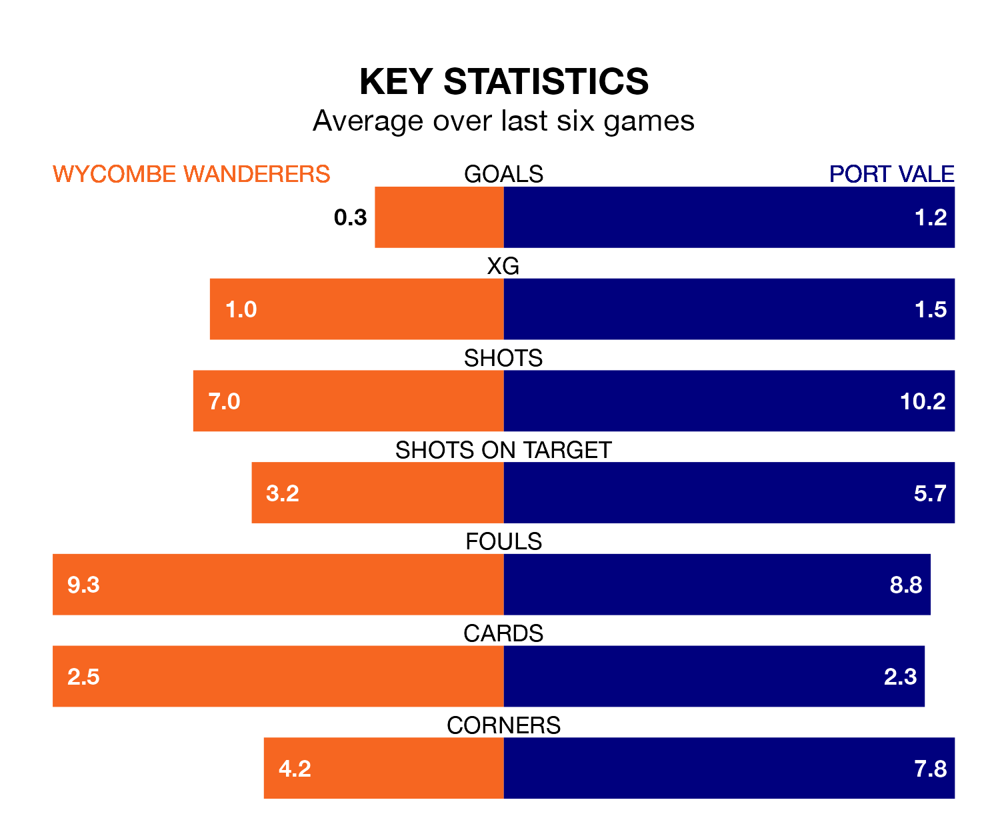

Wycombe Wanderers are on a terrible run ahead of hosting Port Vale at Adams Park on Saturday, with just two points collected from their last six games.
The Chairboys have picked up two draws and four losses in their last six EFL League One games, and face a Valiants side whose last six games have brought two wins and one draw.
Wycombe are 18th in the table after 20 games, of which they have won six and drawn five, earning 23 points.
Vale are two places ahead of Wanderers in 16th, with seven wins and four draws putting them on 25 points.
With 18 goals in 20 games so far this season, the Valiants are scoring at below the league average rate with 0.9 goals per game. And they are conceding more than average, letting in 29 goals at a rate of 1.4 per game.
The Chairboys are also below average scorers, with 1.2 goals per game, compared to a league average of 1.3. They have conceded 1.4 goals per game.
Over the last two years, Wycombe and Vale have played each other twice. Wycombe won one of them and they drew the other.
Their last meeting was on February 4, when Wycombe won 3-0 away.
Wycombe's last match was on December 16, a 1-1 draw against Derby County, with Luke Leahy getting the goal for the Chairboys.
Vale beat Wigan Athletic 3-2 last time out, also on December 16, with Ethan Chislett on the scoresheet.
Updated: 15:16, 21/12/23